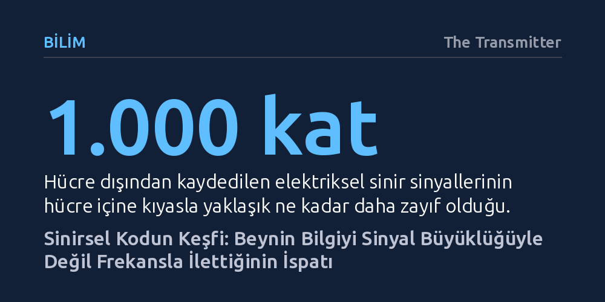

BILIM · The Transmitter · 2026-10-13
Edgar Douglas Adrian ve Yngve Zotterman, 1925'te tek bir sinir lifini izole ederek nöronların bilgiyi elektriksel sinyalin boyutuyla değil, frekansıyla ilettiğini kanıtladı. Bu keşif, sinir sisteminin dijital mantıkla çalışan evrensel iletişim dilini ortaya koydu.
Duyusal deneyimlerin ve düşüncelerin beyinde analog voltaj değişimleriyle değil, tıpkı bilgisayarlardaki ikili kod gibi sabit büyüklükteki elektriksel darbelerin sıklığıyla temsil edildiğini gösterir.

Yirminci yüzyılın ilk çeyreğinde fizyologlar, sinirlerin elektriksel uyarılar taşıdığını biliyor ancak bu iletimin tam olarak nasıl gerçekleştiğini çözemiyordu. Edgar Douglas Adrian ve hocası Keith Lucas, sinirlerin "ya hep ya hiç" ilkesiyle çalıştığını tespit etmişti: Bir motor sinire uygulanan elektrik akımı belirli bir eşik değerin altındayken bağlı kasta hiçbir tepki oluşmuyor, eşik aşıldığında ise akım ne kadar artırılırsa artırılsın kasılmanın şiddeti değişmiyordu. Bu değişmezlik sinirin kendi biyolojisinden kaynaklanıyordu ve muhtemelen tüm sinir tipleri için geçerliydi.
O yıllarda araştırmacıların karşılaştığı en büyük engel ölçüm cihazlarının yetersizliğiydi. Bir sinir hücresi uyarıldığında hücre içinde oluşan aksiyon potansiyelleri (elektriksel darbeler) onlarca milivolt civarındayken, hücre dışından yapılan kayıtlarda bu sinyal yaklaşık bin kat zayıflıyor ve dönemin aletleriyle tespit edilemeyecek kadar küçülüyordu. Bu yüzden bilim insanları ancak bütün bir sinir demetine çok güçlü elektrik akımları vererek sayısız aksonu aynı anda ateşleyebiliyor, ortaya çıkan devasa toplu sinyali yakalamaya çalışıyordu.
Bu yöntem araştırmacıları büyük bir yanılgıya hapsediyordu. Normal fizyolojik işleyiş sırasında her bir aksonun kendi bağımsız sinyalini taşıdığı, bu sinyallerin sabit bir şekle sahip olduğu ve ardışık dizilimleriyle bir bilgi kodu oluşturduğu henüz bilinmiyordu. Zayıf sinyalleri yükseltecek yeni bir teknolojiye ve sinir demetlerini tek tek liflerine kadar ayırabilecek olağanüstü bir el becerisine ihtiyaç vardı.
Çıkmazı aşan ilk adım, tıp dünyasının dışından, dönemin en popüler iletişim yeniliği olan radyo teknolojisinden geldi. Radyolar için geliştirilen vakum tüpleri (elektron lambaları), mikroskobik düzeydeki elektriksel dalgalanmaları binlerce kat büyütebilecek bir kapasite sunuyordu. Harvard ve Washington Üniversitelerindeki fizyologlar bu tüpleri sinir sinyallerini yükseltmek için kullanmaya başlamış ve umut verici sonuçlar almıştı. Adrian da bu yeni yükseltme yöntemini Cambridge'deki laboratuvarına taşıdı.
Denklemin ikinci ve belirleyici parçası ise 1925 yılında İngiltere'ye gelen 27 yaşındaki İsveçli genç araştırmacı Yngve Zotterman oldu. Disseksiyon konusunda olağanüstü bir el yeteneğine sahip olan Zotterman, Adrian'ın laboratuvarında çalışmaya başladıktan yalnızca iki ay sonra dönüm noktasını yarattı. Bir motor sinir kaydı sırasında, bağlı kas dokusunu mikroskop altında sabırla tıraşlayarak geriye yalnızca tek bir kas iğciği kalana kadar küçülttü.
Bu mikro-cerrahi müdahale sayesinde onlarca aksonun yarattığı karmaşık gürültü bir anda kayboldu ve geriye tek bir sinir lifinin saf sinyali kaldı. İki araştırmacı cihazın ekranında beliren manzarayı gördüklerinde büyük bir heyecan yaşadı; Zotterman o anı sonradan, "İkimiz de daha önce hiç görülmemiş bir şeye tanık olduğumuzun ve hayatın büyük bir sırrını keşfettiğimizin farkındaydık" sözleriyle anlatacaktı.
Tek bir liften kaydedilen sinyaller incelendiğinde şaşırtıcı bir düzen ortaya çıktı. Ekrana yansıyan elektriksel dalgalanmaların tamamı birbiriyle aynı forma ve aynı yüksekliğe sahipti. Daha da önemlisi, kas dokusu gerilip uygulanan mekanik kuvvet artırıldığında sinyallerin boyutu ya da şiddeti kesinlikle büyümüyordu; bunun yerine sinyallerin tekrarlanma sıklığı, yani frekansı artıyordu.
Bu bulgu, sinir sisteminin temel çalışma prensibini aydınlattı. Nöronlar bilgiyi analog bir voltaj artışıyla değil, modern bilgisayarların kullandığı birler ve sıfırlar gibi dijital darbeler dizisiyle iletiyordu. Duyu organının maruz kaldığı uyaran ne kadar güçlüyse, sinir teline iletilen elektrik darbeleri o kadar sıklaşıyordu. Sinir sisteminin evrensel iletişim dili, yani "sinirsel kod" tam olarak buydu.
Adrian ve Zotterman'ın 1926 yılında yayımladıkları iki makale bilim dünyasında anında devrim etkisi yarattı. Bireysel nöronların bilgiyi nasıl işlediğini ilk kez kesin kanıtlarla gösteren bu çalışma, yalnızca altı yıl sonra Edgar Douglas Adrian'a Nobel Fizyoloji veya Tıp Ödülü'nü kazandırdı.
Bugün geriye dönüp baktığımızda, Adrian ve Zotterman'ın sinirbilimde çağ açan o tarihi grafiklerini ilk bakışta anlamlandırmak oldukça güçtür. Modern bir gözlemci için eski optik kayıt cihazlarının ürettiği zikzaklı çizgiler oldukça karmaşık ve okunması zor görünür. Birden fazla aksonun düzensiz karalamalarından tek bir lifin düzenli atımlarına geçiş, o günün araştırmacıları için bir aydınlanma anıyken bugün uzmanlık gerektiren bir arşiv belgesi gibidir.
Yine de o ilkel kayıtların arkasındaki kavramsal netlik, aradan geçen bir asra rağmen güncelliğini koruyor. Günümüzde nöroprotezlerden beyin-bilgisayar arayüzlerine kadar sinirbilimin ulaştığı modern teknolojiler, hâlâ 1925'te Cambridge'deki o bodrum katında çözülen temel kural üzerine inşa ediliyor: Canlılar aleminde sinirsel bilgi, sinyalin büyüklüğünde değil, sıklığında saklıdır.